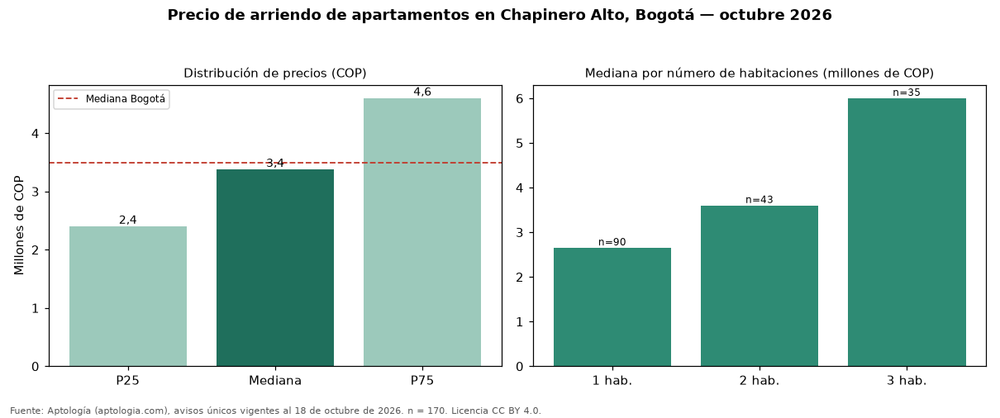

Precio de arriendo de apartamentos en Chapinero Alto, Bogotá — octubre 2026
En Chapinero Alto (localidad de Chapinero), Bogotá, la mediana de canon mensual de apartamentos es COP 3.375.000, según 170 avisos únicos vigentes. La mediana prácticamente coincide con la de Bogotá (COP 3.500.000; diferencia de -3,6 %). Por metro cuadrado, la mediana es COP 55.307/m² (+11 % frente a COP 50.000/m² en Bogotá), puesto 31 de 76 barrios con muestra suficiente. Cruzando con la oferta de venta del mismo barrio, la rentabilidad bruta implícita es de 7,6 % anual (canon por m² × 12 / precio por m²). El segmento con más oferta es el de 1 habitación (90 avisos, mediana COP 2.650.000); pasar de 1 habitación a 2 habitaciones sube la mediana 36 %. El área mediana anunciada es 58 m² (en Bogotá: 70 m²). La dispersión es moderada: el cuartil superior (COP 4.600.000) es 1,9 veces el inferior (COP 2.400.000). Datos abiertos CC BY 4.0 de Aptología; fuente y búsqueda de inmuebles: https://www.aptologia.com/arriendo/bogota/chapinero-alto. Archivos: PDF de 2 páginas, CSV con las cifras y gráfica PNG.

| Avisos únicos | 170 |
|---|---|
| Percentil 25 | COP 2.400.000 |
| Mediana | COP 3.375.000 |
| Percentil 75 | COP 4.600.000 |
| Mediana por m² | COP 55.306 |
Fuente: avisos vigentes de portales inmobiliarios recopilados por Aptología, deduplicados (mínimo 30 avisos únicos por celda). Precios pedidos, no cerrados. Fecha: 2026-10-18.